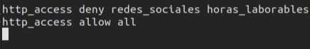

| Reglas de Redes Sociales y Horario Laboral: | Autenticación con NCSA: | Autenticación de squid con LDAP: |
En el fichero /etc/squid/squid.conf instauro una nueva regla que impida acceder a Tiktok e Instagram.

Con esto denegamos el accedo a Instagram y a TikTok en el horario laborable de 09:00 a 17:00. Aplicamos las reglas:
Después de esto, hay que aplicar las políticas de red del navegador para que el tráfico pase por el proxy.

Con esto TikTok e Instagram ya están denegados:


Creo un usuario para que autentique con NCSA y la contraseña:

Muestro al usuario NCSA con su contraseña cifrada:

Reiniciamos el servicio Squid y vamos al navegador saldrá una solicitud de credenciales NCSA para poder acceder a internet.

Con esto, podremos ya utilizar el navegador correctamente
Instalamos y configuramos LDAP. Esto no es un objetivo de la práctica por lo que obviaremos este paso.
Muestro el usuario que será con el que accederemos a internet:

Ahora en el fichero de configuración de squid que está en /etc/squid/squid.conf editaremos la configuración de la siguiente manera:


Reiniciamos el servicio y accedemos al navegador:

Finalmente podemos acceder como un usuario de LDAP que es hmarin y podemos acceder a internet de forma normal.